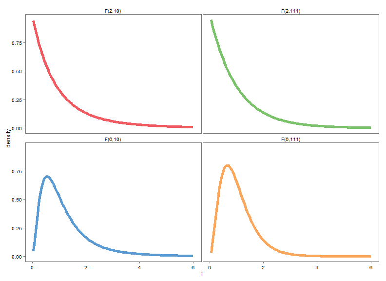
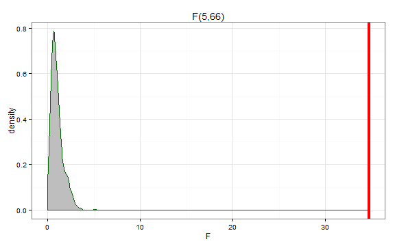
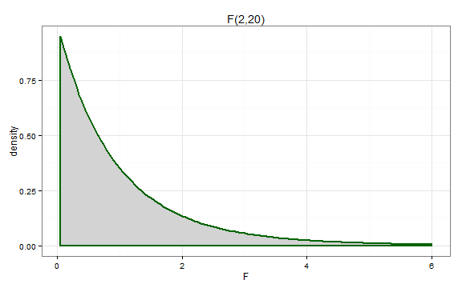

Ch 2 - One Way ANOVA
Stat 217
Introduction
In this activity we will look at two data sets: one on insecticides and the other about ACT scores. We will perform a One-Way ANOVA on these data using \(\alpha = 0.05\) for a significance level.
Upon completing this activity, you should be comfortable
- setting up the hypotheses for a One-Way ANOVA using either cell means or reference coding (Step 1 of the Six Steps in Hypothesis Testing)
- writing out models using either reference coding or cell means coding
- using R output to estimate these Greek letters
- identifying which level of a variable R treats as the "reference level"
- filling in ANOVA tables and identifying the test statistic (Step 3)
- identifying the degrees of freedom for F-distributions
- using F-distributions to find a p-value (Step 4)
- making a decision about the null hypothesis (Step 5)
- writing a conclusion for your hypothesis test in the context of the problem (Step 6)
The "Show Answer" button still does not work. My apologies.
The questions to turn in to me are not all at the end this time. I tried to label them "Take Home Questions" throughout the activity. There should be 8 total. Please do not forget any.
The Insect Sprays Data
In an agricultural experiment, 72 plots of land were randomly assigned to be treated with one of six different insecticides. The next day, the number of insects in each plot were counted. We will test to see if there is a difference in the number of insects for at least one of the sprays. Since there is a quantitative response variable and a single categorical explanatory variable, a One-Way ANOVA is an appropriate procedure for these data.
data(InsectSprays) # load the data
boxplot(count ~ spray, data = InsectSprays)

The ACT Data
A school is interested in comparing ACT scores for students with baseball scholarships, football scholarships, and non-athletes. Let Group 1 be the Baseball athletes, Group 2 be the non-athletes, and Group 3 be the Football athletes. They want to know if one of the groups has different ACT scores from the other.
act <- read.csv("act-scores.csv", header = T)
head(act)
#> Sport ACT
#> 1 Baseball 25
#> 2 Baseball 22
#> 3 Baseball 19
#> 4 Baseball 25
#> 5 Baseball 24
#> 6 Baseball 25
Take Home Question #1: ACT Boxplots
This is the first question you'll submit to me in your write-up.
1) Does it appear that one of the types of students has different scores than the others.
boxplot(ACT ~ Sport, data = act)

Some Information about the ACT Data
The ACT Data
| Baseball | Non.athletes | Football |
|---|---|---|
| 25 | 21 | 22 |
| 22 | 27 | 21 |
| 19 | 29 | 24 |
| 25 | 26 | 27 |
| 24 | 30 | 19 |
| 25 | 27 | 23 |
| 24 | 26 | 17 |
| 23 | 23 |
- What is \(n_1\)?
- What is \(n_2\)?
- What is \(n_3\)?
- What is \(y_{12}\)?
What is the sample size of each group? What is the value of the first observation in group 2?
- 8
- 8
- 7
- 21
Insect Sprays Hypotheses
Using cell means coding, the hypotheses are:
- \(H_0: \mu_1 = \mu_2 = \ldots = \mu_6\)
- \(H_A\): at least one \(\mu_j\) is not equal to the others
Using reference coding, the hypotheses are:
- \(H_0: \tau_1 = \tau_2 = \ldots = \tau_6 = 0\)
- \(H_A\): at least one \(\tau_j\) is not equal to zero
Take Home Question #2: ACT Hypotheses
2) Write out the hypotheses for the ACT Data. You may use either cell means coding or reference coding.
Insect Sprays Model
The model below was fit using reference coding.
- Spray A is the reference level so \(\hat{\mu}_A = 14.5\)
- The Greek letter estimated by the
sprayCline is \(\tau_3\). It estimates the mean difference in insect counts between plots sprayed with Spray C and plots sprayed with Spray A. - The estimated mean number of insects in plots sprayed with Spray F is \(\hat{\mu}_6 = \hat{\alpha} + \hat{\tau}_6 = 14.5 + 2.167 = 16.667\)
lm1 <- lm(count ~ spray, data = InsectSprays)
summary(lm1)
#>
#> Call:
#> lm(formula = count ~ spray, data = InsectSprays)
#>
#> Residuals:
#> Min 1Q Median 3Q Max
#> -8.33 -1.96 -0.50 1.67 9.33
#>
#> Coefficients:
#> Estimate Std. Error t value Pr(>|t|)
#> (Intercept) 14.500 1.132 12.81 < 2e-16
#> sprayB 0.833 1.601 0.52 0.60
#> sprayC -12.417 1.601 -7.76 7.3e-11
#> sprayD -9.583 1.601 -5.99 9.8e-08
#> sprayE -11.000 1.601 -6.87 2.8e-09
#> sprayF 2.167 1.601 1.35 0.18
#>
#> Residual standard error: 3.92 on 66 degrees of freedom
#> Multiple R-squared: 0.724, Adjusted R-squared: 0.704
#> F-statistic: 34.7 on 5 and 66 DF, p-value: <2e-16
Take Home Question #3: ACT Model
3) Write out the model for the ACT Data. If you used reference coding in number 2, use that model; if you used cell means coding, then write out the cell means model.
ACT Model from R
This code fits the reference coding model, and provides information about the model. What is the reference group?
lm2 <- lm(ACT ~ Sport, data = act)
summary(lm2)
#>
#> Call:
#> lm(formula = ACT ~ Sport, data = act)
#>
#> Residuals:
#> Min 1Q Median 3Q Max
#> -5.125 -1.116 0.625 1.625 5.143
#>
#> Coefficients:
#> Estimate Std. Error t value Pr(>|t|)
#> (Intercept) 23.375 0.986 23.70 4.1e-16
#> SportFootball -1.518 1.444 -1.05 0.306
#> SportNon.athletes 2.750 1.395 1.97 0.063
#>
#> Residual standard error: 2.79 on 20 degrees of freedom
#> Multiple R-squared: 0.313, Adjusted R-squared: 0.245
#> F-statistic: 4.56 on 2 and 20 DF, p-value: 0.0233
What is the reference group? What Greek letter does the SportFootball row estimate? What is the average ACT of the non-athletes group?
- Baseball; \(\mu_3\); 26.125
- Football; \(\tau_1\); 23.375
- Football; \(\tau_2\); 2.75
- Football; \(\mu_1\); -1.5179
- Baseball; \(\tau_2\); 26.125
What sport category is missing? That's the reference group.
The reference group is the one that's not shown. The rows beginning with "Sport" estimate the deviation from the reference group. To find the average for the Football group, we add the deviation for that group to the estimate for the reference group.
Insect Sprays ANOVA Table
Here's a sparse ANOVA table. Try to fill it in on your own (you should be able to fill in everything except the p-value). Use the handout containing the formulas in each cell for reference.
| id | Df | Sum Sq | Mean Sq | F value | Pr(>F) |
|---|---|---|---|---|---|
| Attr | 2669 | ||||
| Residuals | 1015 |
Filling in the Insect Sprays ANOVA Table
Let's fill in the rest of it. The Attr degrees of freedom (df) equals the number of groups minus 1 (J-1) so that equals 5. The Residual df equals the total sample size minus the number of groups (N-J) which equals 12*6 - 6 = 66.
The $MS_A = SS_A / $ Attr df \(= 2669 / 5 = 534\)
The $MS_E = SS_E / $ Residual df \(= 1015 / 66 = 15\)
The F-statistic \(= MS_A / MS_E = 534 / 15 = 34.7\)
It follows an F distribution with 5 numerator and 66 denominator df: \(\sim F(5, 66)\)
ACT ANOVA Table Part 1
Let's fill in the ACT ANOVA table.
| id | Df | Sum Sq | Mean Sq | F value | Pr(>F) |
|---|---|---|---|---|---|
| Group | |||||
| Residuals |
We'll start by providing the correct degrees of freedom
Degrees of Freedom for the ACT Data
What degrees of freedom should we use for the Group row? How about for the Residuals?
- 2, 24
- 2, 20
- 3, 24
- 3, 20
- 3, 21
The Group Df is equal to the number of groups minus 1. The Residuals Df is equal to the number of observations (N) minus the number of groups
We have three groups so Group Df = 3-1. We have a sample size of 23 so the Residual Df = 23-3.
ACT ANOVA Table Part 2
I've filled in a couple more entries in the table. Next, you'll fill in the Residuals Sum of Squares (\(SS_E)\), the Group Mean Squares (\(MS_A)\), and the F statistic.
| id | Df | Sum Sq | Mean Sq | F value | Pr(>F) |
|---|---|---|---|---|---|
| Group | 2 | 71.0 | |||
| Residuals | 20 | 7.78 |
Completing the ACT ANOVA Table
What is \(SS_E\), \(MS_A\), and the F-statistic?
- What is \(SS_E\)?
- What is \(MS_A\)?
- What is the F-statistic?
Recall that \(SS / df = MS\). The F-statistic is equal to the ratio of \(MS_A\) to \(MS_E\).
- 156
- 35.5
- 4.56
One-Way ANOVA Test Statistics
When doing ANOVA, the test statistic is always located in the "F value" column in R. It follows an F-distribution with two degrees of freedom. The first, called the numerator df, is equal to the number of groups minus one (\(J-1\)). The second, called the denominator df, is equal to the sample size minus the number of groups (\(N-J\)).
ACT Test Statistic Distribution
What is the test statistic? What distribution does it follow?
- 4.56, ~F(2, 20)
- 35.5, ~t(22)
- 4.56, ~t(22)
- 4.56, ~F(20)
- 4.56, ~F(2)
- 35.5, ~F(2, 22)
The statistic is our F value. It has two degrees of freedom: the numerator df and the denominator df.
The F distribution has two degrees of freedom. The first is the "numerator" degrees of freedom, and the second is the denominator degrees of freedom.
R Code for an ANOVA Table
An ANOVA table can be generated in R using the anova command
anova(lm1) # for insect sprays data
#> Analysis of Variance Table
#>
#> Response: count
#> Df Sum Sq Mean Sq F value Pr(>F)
#> spray 5 2669 534 34.7 <2e-16
#> Residuals 66 1015 15
anova(lm2) # for ACT data
#> Analysis of Variance Table
#>
#> Response: ACT
#> Df Sum Sq Mean Sq F value Pr(>F)
#> Sport 2 71 35.5 4.56 0.023
#> Residuals 20 156 7.8
The F-distribution
For a One-Way ANOVA, we compare the test statistic to an F-distribution. Some characteristics of the F-distribution:
- It is always greater than 0.
- It is right-skewed
- We always use the right tail of the F-distribution to find p-values
- It has two degrees of freedom called the numerator df and the denominator df
- The numerator and denominator degrees of freedom determine the shape of the F-distribution. Here are examples of F-distributions with different degrees of freedom (from page 77 of your book).

P-value for Insect Sprays
Recall, that we always use the right tail to find a p-value. An F(5, 66) distribution is plotted below. The test statistic is labelled with the bright red line.

Clearly, the test statistic is more extreme than anything we would expect to observe under the null. We can use the pf command to compare our test statistic to the F-distribution. In R, 3.19e-17 means \(3.19 * 10^{-17}\) so we get an incredibly tiny p-value for these data.
pf(34.7, 5, 66, lower.tail = F)
#> [1] 3.19e-17
Take Home Question #4: ACT Null Distribution
4) An \(F(2,20)\) is plotted below. Draw this plot with a line for the test statistic in the questions you turn in. Shade the part of the distribution you will use to find the p-value. If you are typing this assignment, you can do this in Paint.

ACT p-value
Here is the ANOVA table for the ACT data from R
anova(lm2)
#> Analysis of Variance Table
#>
#> Response: ACT
#> Df Sum Sq Mean Sq F value Pr(>F)
#> Sport 2 71 35.5 4.56 0.023
#> Residuals 20 156 7.8
- What is the p-value for the ACT data?
The \(Pr(>F)\) column indicates the probability of observing an F-value greater than or equal to what we actually observed
- 0.023
Insect Spray Decision
The p-value was approximately 0 which is less than 0.05 so we reject the null.
ACT Decision
What is your decision for the ACT data?
- p-value is less than the significance level so we accept the null
- p-value is less than the significance level so we fail to reject the null
- p-value is less than the significance level so we reject the null
- p-value is greater than the significance level so we fail to reject the null
- p-value is greater than the significance level so we accept the null
- none of the above
Recall that the significance level was 0.05
Conclusions for One-Way ANOVA
The conclusion is always a statement about the decision of the null hypothesis in the context of the problem. So, for a One-Way ANOVA, it is a statement about whether or not we conclude that at least one group has a different mean than the others.
For the insect sprays data:
- The evidence strongly suggests that the true mean number of insects is different for at least one type of insecticide.
Additional Take Home Questions
5) What is your conclusion for the ACT data?
6) What is the scope of inference for the Insect Sprays data?
7) What is the scope of inference for the ACT data?
8) For these examples, did we conduct parametric tests or non-parametric tests?